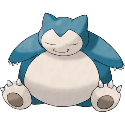

ISTJ – The Logistician

You’re a Snorlax!
Personality Overview: ISTJs are dependable, methodical, and value consistency. You thrive on structure and reliability, preferring to do things the right way rather than rushing into impulsive decisions. People trust you because you’re steady, practical, and always follow through on your commitments.
Strengths
- Highly reliable and consistent
- Organized and detail-oriented
- Loyal and committed to responsibilities
Challenges
- Can be resistant to change or new ideas
- May come across as overly serious or stubborn
- Sometimes focuses too much on rules and routines
Why Snorlax?
Snorlax is solid, steady, and dependable—just like you. Though calm and unhurried, Snorlax is a powerhouse when needed, reflecting your ability to stay cool under pressure and deliver results when it matters most.
Personality Deep Dive
Your dominant trait is Introverted Sensing (Si), which keeps you grounded and focused on proven methods. Your secondary trait, Extraverted Thinking (Te), drives your efficiency and reliability. You’re a stabilizing force, ensuring things are done properly and consistently.
Pokémon Compatibility
You work best with other grounded, dependable types who appreciate stability, but overly spontaneous or chaotic personalities may feel frustrating to you.
✅ Best Matches
- ESTJ – Blastoise: Shares your love of structure and reliability, forming a strong, practical team.
- ISFJ – Vaporeon: Gentle and loyal, aligning with your dependable nature.
- INFJ – Gardevoir: Insightful and thoughtful, adding depth to your practical world.
🔸 Good Potential
- INTJ – Lucario: Strategic and focused, they respect your consistency and share your appreciation for long-term planning.
- ESFJ – Chansey: Warm and caring, providing social balance to your steady personality.
- INFP – Lapras: Gentle and kind, though sometimes more idealistic than you prefer.
âš ï¸ Tough Matches
- ENTP – Gengar: Too unpredictable and playful for your structured lifestyle.
- ENFP – Eevee: Fun but changeable, which can feel overwhelming to you.
- ESTP – Arcanine: Risk-taking and impulsive, often clashing with your cautious nature.
Retake the Quiz